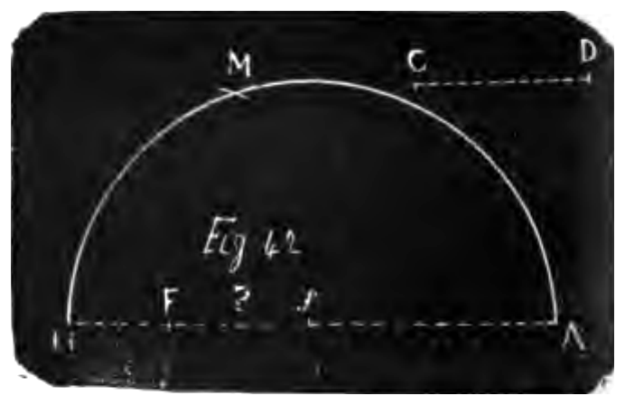

§ 99: Mean Proportional by Compass Alone¶
99. Prob. Between the two given distances \(AB\) and \(CD\) (fig. 42) to find the mean proportional.
Sol. On \(AB\) add to it \(CD\) from \(B\) to \(H\) (§ 73). Divide \(AH\) in half at \(f\) (§ 66). To \(Bf\) add in a straight line the equal \(BF\) (§ 64). With centers \(F, f\), and with radius \(fA\), describe two circles intersecting at \(M\). Then \(BM\) will be the mean proportional.


Dem. Since the points \(f, B, F\) lie on the same straight line \(HA\), and the sides of the two triangles \(MBf, MBF\) are respectively equal, the angle \(MBf = MBF\) (I.8), and therefore both are right angles (I.13). Thus \(MB\) will be perpendicular to the diameter \(HA\) of the semicircle \(HMA\). Hence (VI.13) \(AB : BM :: BM : BH\), that is, \(AB : BM :: BM : CD\).